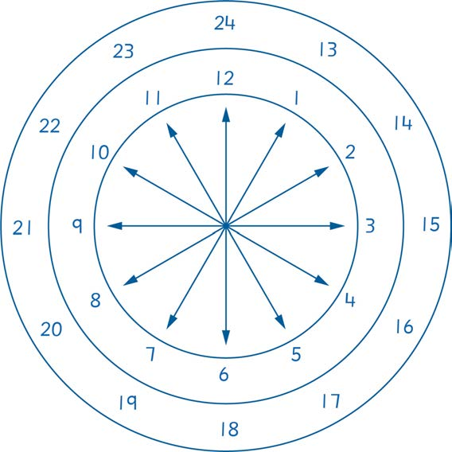

(a) Saa saba kamili
5.
Chora uso wa saa ya mshale na ya kidigiti inayoonesha muda katika saa zifuatazo:
(b) Saa tisa kamili
(c) Saa mbili na dakika thelathini
(d) Saa tatu na dakika arobaini na tano.
6.
Andika muda kwa numerali.
(a) Saa moja na nusu
(b) Saa nne na dakika ishirini na tano
(c) Saa kumi na moja kamili
(d) Saa sita na dakika arobaini na tano
Kusoma muda kwa mtindo wa saa 24
Kielelezo kifuatacho kinaonesha saa 24 ambazo hazisomwi kwenye nyuso za saa za mshale.
